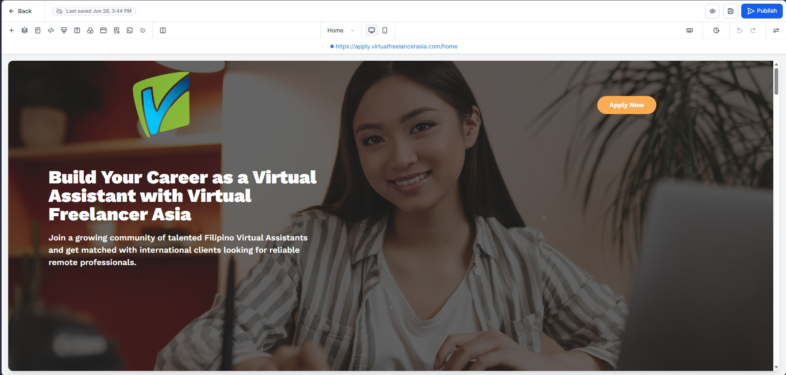
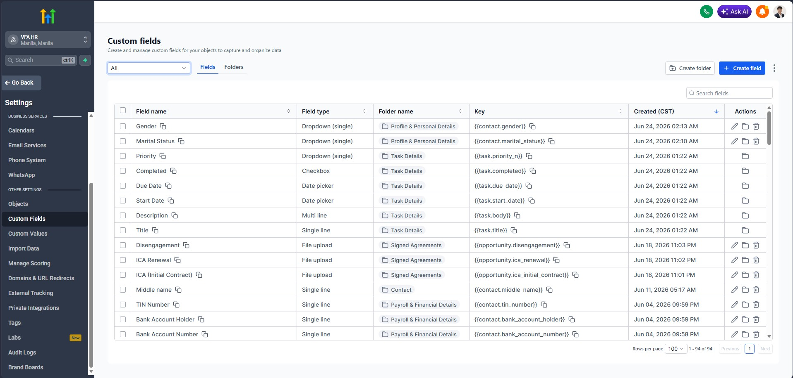
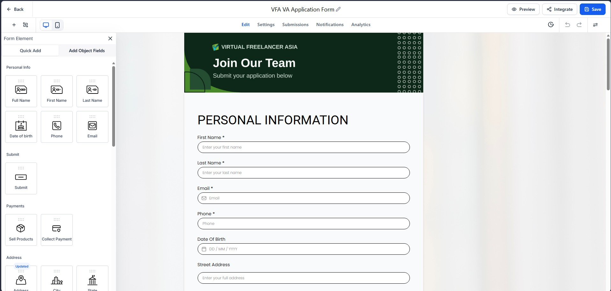
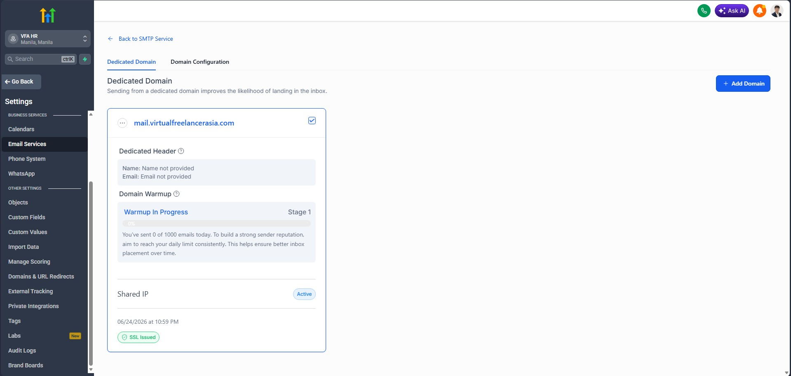

Virtual Freelancer Asia Recruitment Automation System
Virtual Freelancer Asia Recruitment Automation System
A GoHighLevel recruitment funnel designed to centralize candidate intake, application forms, and CRM workflow management.
Project Overview
The Virtual Freelancer Asia Recruitment Automation System was developed using GoHighLevel to modernize and streamline the company's recruitment process.
The primary objective was to replace the previous manual application workflow with a centralized recruitment funnel where applicants could learn about the company, explore available positions, submit their application, and upload all required documents in a single place.
The project combines a responsive landing page, structured application forms, CRM organization, and workflow automation to improve both the applicant experience and the recruitment team's internal processes.
Background & Business Problem
Before this project, applicants typically contacted Virtual Freelancer Asia through Facebook Messenger.
Recruiters manually requested applicant information, collected requirements through Messenger conversations and email, and scheduled interviews separately. This process required significant manual effort and made it difficult to organize applicant information consistently.
The goal was to build a centralized recruitment system that would:
- Introduce applicants to Virtual Freelancer Asia
- Explain the recruitment process
- Display available job opportunities
- Collect applicant information through structured forms
- Accept document uploads
- Automatically organize applicant records inside the CRM
This project replaced the previous manual workflow with a more structured and scalable recruitment process.
My Role
I was responsible for designing, building, configuring, testing, and deploying the recruitment funnel.
- Designing the recruitment landing page
- Building the application forms
- Creating custom CRM fields
- Configuring Opportunities
- Managing Contacts
- Designing the recruitment pipeline
- Creating basic workflow automations
- Configuring email automation
- Setting up the dedicated domain
- Configuring DNS records using HostGator
- Optimizing the funnel for mobile devices
- Writing and organizing landing page content
- Testing the complete application flow
Planned future enhancements include calendar booking integration and additional CSS customization for an improved user experience.
Technologies & Tools Used
Platform & Tools:
- GoHighLevel
- HTML
- CSS
- JavaScript
- HostGator
- DNS Configuration
- Custom Domain
- Canva
- ChatGPT
Skills Applied:
- CRM automation
- Recruitment workflow design
- Custom CRM fields
- Form development
- Contact management
- Workflow automations
- Domain and DNS setup
- Mobile optimization
- Testing and deployment
Challenges & Obstacles
Several aspects of the project required significant learning and problem-solving.
Solution: I researched platform features, designed the CRM data model carefully, and tested workflow automations iteratively to deliver a stable recruitment system.
Additional challenges included planning the CRM structure, balancing comprehensive form fields with a user-friendly application experience, and configuring DNS records through HostGator.
Solution & Approach
The project followed an iterative development approach that focused on applicant experience, CRM structure, and automation readiness.
- Planned the applicant journey and recruitment process.
- Designed the landing page structure.
- Built the recruitment application form.
- Created the CRM data structure and custom fields.
- Configured custom fields, opportunities, and contact management.
- Built initial workflow automations.
- Configured email automation.
- Configured the custom domain and DNS records.
- Performed desktop and mobile testing.
- Published the recruitment funnel and planned ongoing enhancements.
Results & Outcome
The completed recruitment system introduced operational improvements by centralizing applicant information, reducing manual data collection, standardizing the recruitment process, and improving the applicant experience.
Centralized data
Applicant information is now stored consistently in one CRM.
Reduced manual work
Manual collection of applicant requirements was significantly reduced.
Improved applicant flow
Applicants can now apply, upload documents, and access the process from one place.
Scalable foundation
The system is ready for future recruitment automation enhancements.
Project Screenshots & Visuals
Project visuals are shown here and may be updated once final materials are available.




Key Takeaways & Lessons Learned
This project significantly strengthened my understanding of CRM systems and business process automation.
Through building the recruitment automation system, I gained practical experience with GoHighLevel CRM, recruitment workflow design, custom fields, CRM pipelines, workflow automation, domain and DNS configuration, landing page development, mobile optimization, and process improvement.
Beyond the technical implementation, this project reinforced the importance of designing systems that simplify repetitive administrative work while creating a better experience for both applicants and recruiters.
- Lesson 1: This project expanded my practical experience with GoHighLevel CRM.
- Lesson 2: I learned how to design recruitment workflows and custom CRM fields for consistent applicant tracking.
- Lesson 3: The project reinforced the value of iterative testing and mobile optimization for candidate-facing applications.
This work also represents an important milestone in my transition toward CRM Automation and Operations, combining IT administration, database management, technical support, and process improvement into a practical, ongoing business solution.
Interested in working together?
Let's discuss how I can help with your next project.
Get In Touch View More Projects